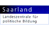
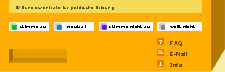

<html>
    <head>
        <title>Wahlomat</title>
        <meta http-equiv="Content-Type" content="text/html; charset=utf-8">
        <link rel=stylesheet type="text/css" href="style.css">
    </head>

    <body background="images/bg2004ff.gif" bgcolor="#A9BFE1" text="#645F45" link="#000000" vlink="#000000" alink="#000000" leftmargin="0" topmargin="0" marginwidth="0" marginheight="0">
        <script language="javascript">
            if (parent.TOPPY != 1){
   	            location.href = "main_app.html";
   	            exit;
            }

            S_nSprache = parent.S_nSprache;
            S_nTheseAktuell = parent.S_nTheseAktuell;
            S_nTheseMax = parent.S_nTheseMax;
            S_aThesen = parent.S_aThesen;
            S_aThemen = parent.S_aThemen;
            S_nDetailAuswertung = parent.S_nDetailAuswertung;

            CONST_THESEN_BESCHREIBUNG = parent.CONST_THESEN_BESCHREIBUNG;

            WOMT_aThesenBilder = parent.WOMT_aThesenBilder;
            WOMT_aThesen = parent.WOMT_aThesen;
            WOMT_nThesen = parent.WOMT_nThesen;
            WOMT_nTableWidth = parent.WOMT_nTableWidth;
            WOMT_nTexte = parent.WOMT_nTexte;
            WOMT_aParteienLogos = parent.WOMT_aParteienLogos;
            WOMT_aThesenParteien = parent.WOMT_aThesenParteien;
            WOMT_aParteien = parent.WOMT_aParteien;
            WOMT_nParteien = parent.WOMT_nParteien;
            WOMT_aBilder = parent.WOMT_aBilder;
            WOMT_aTexte = parent.WOMT_aTexte;

            CONST_THESEN_BESCHREIBUNG_KOMMTNOCH = parent.CONST_THESEN_BESCHREIBUNG_KOMMTNOCH;

            bgcolor_0065CE = ' bgcolor="#0065CE" ';
            bgcolor_FFFFFF = ' bgcolor="FFFFFF" ';
            bgcolor_000000 = ' bgcolor="#000000" ';
            bgcolor_00CF00 = ' bgcolor="#FFFFFF" ';
            bgcolor_D6D3D6 = ' bgcolor="#D6D3D6" ';
            bgcolor_848284 = '';

            b = S_nTheseAktuell + 1;

            function change_detailauswertung() {
                obj_p = document.form_select_partei.partei;
                for (a = 0; a < obj_p.length; a++) {
                    if (obj_p[a].selected == true) {
  	                    parent.change_detailauswertung(a);
  	                    return;
                    }
                }
            }

            function write_4_detailauswertung() {

                rw =    '';
                rw +=   '<center>';
                // Kopfzeile
                rw += '<table border="0" cellpadding="0" cellspacing="0" width="760">';
                rw += '    <tr>';
                rw += '        <td width="25%" height="60"><a href="http://www.bpb.de" target="_blank"></a></td>';
                rw += '        <td width="25%"><a href="http://www.lpm.uni-sb.de/lpb/" target="_blank"></a></td>';
                rw += '        <td width="25%" align="center"><a href="http://www.arbeitskammer.de" target="_blank"></a></td>';
                rw += '        <td width="25%" align="right"><a href="http://www.landesjugendring-saar.de" target="_blank"></a></td>';
                rw += '    </tr>';
                rw += '    <tr>';
                rw += '        <td valign="top" colspan="4" height="10"></td>';
                rw += '    </tr>';
                rw += '</table> ';
                // /kopfzeile

                rw +=   '<br>';
                rw +=   '<table border="0" cellpadding="0" cellspacing="0" width="760">';
                rw +=       '<tr>';
                rw +=           '<td valign="top" width="140">';
                rw += 		'<!-- sprachversion -->'
                rw += parent.WOMT_put_sprachumschaltung();
                rw +=           '</td>';
                rw +=           '<td valign="top" width="503">';
                rw +=               '<table border="0" cellpadding="0" cellspacing="0" width="503" background="images/fill.gif" bgcolor="#ffffff" height="500">';
                rw +=                   '<tr>';
                rw +=                       '<td valign="top" width="20"></td>';
                rw +=                       '<td valign="top" width="480" bgcolor="#ffffff">&nbsp;</td>';
                rw +=                       '<td valign="top" width="3" bgcolor="#000000"></td>';
                rw +=                   '</tr>';
                rw +=                   '<tr>';
                rw +=                       '<td valign="top" width="20" bgcolor="#ffffff"></td>';
                rw +=                       '<td valign="top" bgcolor="#ffffff" width="480">';
                // Infokasten
                rw +=                           '<!-- beginn infokasten -->';
                rw +=                           '<table border="0" cellpadding="3" cellspacing="0" align="right">';
                rw +=                               '<tr>';
                rw +=                                   '<td valign="top" width="12"></td>';
                rw +=                                   '<td><a href="faq.html" onClick="f1=window.open(\'\',\'faq\',\'scrollbars=1,toolbar=1,menubar=0,location=0,status=0,resizable=0,width=348,height=430,print=yes,left=2,top=2\');if (parseInt(navigator.appVersion)>2) {f1.focus();}" TARGET="faq"></a></td>';
                rw +=                                   '<td><b><a href="faq.html" onClick="f1=window.open(\'\',\'faq\',\'scrollbars=1,toolbar=1,menubar=0,location=0,status=0,resizable=0,width=348,height=430,print=yes,left=2,top=2\');if (parseInt(navigator.appVersion)>2) {f1.focus();}" TARGET="faq"><font class="elf" color="#666666">' + WOMT_aTexte['wahlomat_faq'][S_nSprache] + '</font></a></b></td>';
                rw +=                                   '<td valign="top" width="20"></td>';
                rw +=                               '</tr>';
                rw +=                               '<tr>';
                rw +=                                   '<td valign="top" colspan="4"></td>';
                rw +=                               '</tr>';
                rw +=                               '<tr>';
                rw +=                                   '<td valign="top" width="12"></td>';
                rw +=                                   '<td><a href="mailto:info@wahl-o-mat.de"></a></td>';
                rw +=                                   '<td><b><a href="mailto:info@wahl-o-mat.de"><font class="elf" color="#666666">' + WOMT_aTexte['wahlomat_email'][S_nSprache] + '</font></a></b></td>';
                rw +=                                   '<td valign="top" width="20"></td>';
                rw +=                               '</tr>';
                rw +=                               '<tr>';
                rw +=                                   '<td valign="top" colspan="4"></td>';
                rw +=                               '</tr>';
                rw +=                               '<tr>';
                rw +=                                   '<td valign="top" width="12"></td>';
                rw +=                                   '<td><a href="http://www.bpb.de/methodik/P20LEK,0,0,WahlOMat.html" target="_blank"></a></td>';
                rw +=                                   '<td><b><a href="http://www.bpb.de/methodik/P20LEK,0,0,WahlOMat.html" target="_blank"><font class="elf" color="#666666">' + WOMT_aTexte['wahlomat_info'][S_nSprache] + '</font></a></b></td>';
                rw +=                                   '<td valign="top" width="20"></td>';
                rw +=                               '</tr>';
                rw +=                               '<tr>';
                rw +=                                   '<td valign="top" colspan="4"><font class="elf">&nbsp;</font></td>';
                rw +=                               '</tr>';
                rw +=                           '</table>';
                rw +=                           '<!-- ende infokasten -->';
                // /infokasten

                rw +=                           '<font class="standard" size="2"><b>' + WOMT_aParteien[S_nDetailAuswertung][S_nSprache][0] + '</b><p></font>';
                rw +=                           '<form name="form_select_partei" id="form_select_partei" method=get action="">';

                rw +=                           '<font class="standard" size="1"><b>' + WOMT_aTexte["ausw_detail_thesenvergleich"][S_nSprache] + '</b><br></font>';
                rw +=                           '<select onChange="javascript:change_detailauswertung();" name="partei" id="partei">';

                for (a = 0; a < WOMT_nParteien; a++) {
                    if (S_nDetailAuswertung==a) {
                        rw +=                       '<option value="' + a + '" selected>';
                    } else {
                        rw +=                       '<option value="' + a + '">';
                    }
                    rw +=                               WOMT_aParteien[a][S_nSprache][0];
                    rw +=                           '</option>';
                }
                rw +=                           '</select> ';
                rw +=                           '<input type="image" src="images/doppelpfeil_orange.gif"><font class="standard" size="1"><b>' + WOMT_aTexte["ausw_detail_auswaehlen"][S_nSprache] + '</b></font><br>';
                rw +=                           '</form>';
                rw +=                           '<p><font class="standard" size="2">';

                if (CONST_THESEN_BESCHREIBUNG == 1) {
                    rw +=                       WOMT_aTexte["ausw_detail_text_popup"][S_nSprache];
                } else {
                    rw +=                       WOMT_aTexte["ausw_detail_text"][S_nSprache];
                }
                rw +=                           '</font><br><br>';

                rw +=                           '<!-- beginn ergebnis -->';
                rw +=                           '<table border="1" cellpadding="0" cellspacing="0" width="460" class="ergebnis">';
                rw +=                               '<tr>';
                rw +=                                   '<td valign="top" class="abstand" width="30" align="center" bgcolor="#F7E68B"><font class="standard" size="1"><b>Nr.</b></font></td>';
                rw +=                                   '<td class="abstand" width="180" bgcolor="#F9EDAC"><font class="standard" size="1"><b>' + WOMT_aTexte["ausw_detail_these"][S_nSprache] + '</b></font></td>';
                rw +=                                   '<td colspan="2" class="abstand" width="180" align="center" bgcolor="#FEAE02"><font class="standard" size="1"><b>' + WOMT_aTexte["ausw_detail_abstand"][S_nSprache] + '</b></font></td>';
                rw +=                                   '<td class="abstand" width="35" align="center" bgcolor="#F9EDAC"><font class="standard" size="1"><b>' + WOMT_aTexte["ausw_detail_siedu"][S_nSprache] + '</b></font></td>';
                rw +=                                   '<td class="abstand" width="35" align="center" bgcolor="#F9EDAC"><font class="standard" size="1"><b>' + WOMT_aTexte["ausw_detail_partei"][S_nSprache] + '</b></font></td>';
                rw +=                               '</tr>';
                rw +=                               '<tr>';
                rw +=                                   '<td valign="top" class="abstand" width="30" bgcolor="#FBF1BD">&nbsp;</td>';
                rw +=                                   '<td class="abstand" width="180">&nbsp;</td>';
                rw +=                                   '<td width="90" bgcolor="#F4DC59" class="abstand">';
                rw +=                                       '<table border="0" cellpadding="0" cellspacing="0" width="100%">';
                rw +=                                           '<tr>';
                rw +=                                               '<td><font class="zehn" size="1">&nbsp;<b>' + WOMT_aTexte["ausw_detail_gross"][S_nSprache] + '</b></font></td>';
                rw +=                                               '<td align="right">&nbsp;</td>';
                rw +=                                           '</tr>';
                rw +=                                       '</table>';
                rw +=                                   '</td>';
                rw +=                                   '<td width="90" bgcolor="#F4DC59" class="abstand">';
                rw +=                                       '<table border="0" cellpadding="0" cellspacing="0" width="100%">';
                rw +=                                           '<tr>';
                rw +=                                               '<td>&nbsp;</td>';
                rw +=                                               '<td align="right"><font class="zehn" size="1"><b>' + WOMT_aTexte["ausw_detail_klein"][S_nSprache] + '</b>&nbsp;</font></td>';
                rw +=                                           '</tr>';
                rw +=                                       '</table>';
                rw +=                                   '</td>';
                rw +=                                   '<td class="abstand" width="35" align="center">&nbsp;</td>';
                rw +=                                   '<td class="abstand" width="35" align="center">&nbsp;</td>';
                rw +=                               '</tr>';
                for (a = 0; a < WOMT_aThesen.length; a++) {
                    if (S_aThesen[a] <= -2) {
                        dist = 1;
                    } else {
                        dist = Math.abs(WOMT_aThesenParteien[a][S_nDetailAuswertung] - S_aThesen[a]);
                    }

                    rw +=                           '<tr>';
                    if (a & 1) rw +=                    '<td valign="top" class="abstand" width="30" align="center" bgcolor="#FBF1BD">';
                    else rw +=                          '<td valign="top" class="abstand" width="30" align="center" bgcolor="#F8EA9F">';
                    rw +=                                   '<font class="standard" size="1"><b>' + (a + 1) + '</b></font>';
                    rw +=                               '</td>';

                    if (a & 1) rw +=                    '<td class="abstand" width="180" bgcolor="#FFFFFF">';
                    else rw +=                          '<td class="abstand" width="180" bgcolor="#FBF4CD">';

                    popup_du = S_aThesen[a];
                    popup_partei = S_nDetailAuswertung;
                    popup_these = a;
                    popup_sprache = S_nSprache;
                    popup_kommtnoch = CONST_THESEN_BESCHREIBUNG_KOMMTNOCH;

                    if (CONST_THESEN_BESCHREIBUNG == 1) {
                        rw +=                               '<a href="parteien_these_beschreibung.html" onClick="popup_these=' + a + ';popup_du=' + S_aThesen[a] + ';f1=window.open(\'\',\'faq\',\'scrollbars=1,toolbar=1,menubar=0,location=0,status=0,resizable=0,width=348,height=430,print=yes,left=2,top=2\');if (parseInt(navigator.appVersion)>2) {f1.focus();}" TARGET="faq"><font class="standard" size="1">';
                        rw +=                               WOMT_aThesen[a][S_nSprache][0] + ' </font></a>';
                    } else {
                        rw +=                               WOMT_aThesen[a][S_nSprache][0];
                    }
                    rw +=                               '</td>';

                    if (a & 1) bgcolor = '#FBF4CD';
                    else bgcolor = '#F8EA9F';
                    switch(dist) {
                        default:
                        case 1:
                            if (S_aThesen[a] <= -2) { // Keine Antwort!
                                rw +=                   '<td width="90" align="right" bgcolor="' + bgcolor + '"></td>';
                                rw +=                   '<td width="90" bgcolor="' + bgcolor + '"></td>';
                            } else {
                                rw +=                   '<td width="90" align="right" bgcolor="' + bgcolor + '"></td>';
                                rw +=                   '<td width="90" bgcolor="' + bgcolor + '"></td>';
                            }
                        break;
                        case 2:
                            rw +=                       '<td width="90" align="right" bgcolor="' + bgcolor + '"></td>';
                            rw +=                       '<td width="90" bgcolor="' + bgcolor + '">&nbsp;</td>';
                        break;
                        case 0:
                            rw +=                       '<td width="90" align="right" bgcolor="' + bgcolor + '">&nbsp;</td>';
                            rw +=                       '<td width="90" bgcolor="' + bgcolor + '"></td>';
                        break;
                    }

                    if (a & 1) rw +=                    '<td class="abstand" width="35" align="center" bgcolor="#FFFFFF">';
                    else rw +=                          '<td class="abstand" width="35" align="center" bgcolor="#FBF4CD">';

                    if (S_aThesen[a] == 1) rw +=            '';
                    else if (S_aThesen[a] ==0 ) rw +=       '';
                    else if (S_aThesen[a] == -1) rw +=      '';
                    else rw +=                              '';

                    rw +=                               '</td>';

                    if (a & 1) rw +=                    '<td class="abstand" width="35" align="center" bgcolor="#FFFFFF">';
                    else rw +=                          '<td class="abstand" width="35" align="center" bgcolor="#FBF4CD">';

                    if (WOMT_aThesenParteien[a][S_nDetailAuswertung] == 1) {
                        rw +=                               '';
                    } else if (WOMT_aThesenParteien[a][S_nDetailAuswertung] == 0) {
                        rw +=                               '';
                    } else if (WOMT_aThesenParteien[a][S_nDetailAuswertung] == -1) {
                        rw +=                               '';
                    } else if (WOMT_aThesenParteien[a][S_nDetailAuswertung] == -2) {
                        rw +=                               '';
                    }
                    rw +=                               '</td>';
                    rw +=                           '</tr>';
                }

                rw +=                           '</table>';

                rw +=                           '<p> ';
                rw +=                           '<a href="javascript:parent.replaceIFrame(3);"><font class="standard" size="2" color="#645F45"><b>' + WOMT_aTexte['wahlomat_zurueck'][S_nSprache] + '</b></p></a></font>';
                rw +=                       '</td>';
                rw +=                       '<!-- ende ergebnis -->';

                rw +=                       '<td valign="top" width="3" bgcolor="#001636"></td>';
                rw +=                   '</tr>';
                rw +=                   '<tr>';
                rw +=                       '<td valign="top" colspan="3" bgcolor="#001636"></td>';
                rw +=                   '</tr>';
                rw +=               '</table>';
                rw +=           '</td>';
                rw +=           '<td valign="top" width="17"></td>';
                rw +=           '<td valign="top" width="230">';
                rw +=               '';
                rw +=               '<br><br>';
                rw +=               '<p> <a href="../index.html"><font class="standard" size="1" color="#645F45">' + WOMT_aTexte['wahlomat_neu_starten'][S_nSprache] + '</a>';
                rw += 				'<br><a href="http://www.wahlen.saarland.de" target="_liste"> <font class="liste" size="1" color="#9CAAC6">Landeswahlleiterin Saarland</font></a><br><br>';
                rw += 				'<a href="Parteien.pdf" target="_liste"><font class="liste" size="1" color="#9CAAC6">Liste aller zur Landtagswahl zugelassenen Parteien</font></a>';
                rw +=               '<font class="standard" size="1" color="#ffffff">';

                if (S_nSprache == 1000) {
                } else {
                    rw +=           WOMT_aTexte['weitere_informationen_ueber_eu'][S_nSprache];
                }

                rw +=               '<br><br></font>';
                //rw +=               '<a href="http://www.bpb.de/themen/AEEN2Y,,0,Die_Zukunft_der_Europ%E4ischen_Union.html" target="_blank"><font class="standard" size="1" color="#FFD800">www.bpb.de<br></font></a>';
                //rw +=               '<a href="http://www.zdf.de" target="_blank"><font class="standard" size="1" color="#FFD800">www.zdf.de<br></font></a>';
                //rw +=               '<a href="http://www.europa-waehlt.de" target="_blank"><font class="standard" size="1" color="#FFD800">www.europa-waehlt.de<br></font></a>';
                rw +=           '</td>';
                rw +=       '</tr>';
                rw +=   '</table>';
                rw +=   '<br>';

                // Fuss-Bereich
                rw +=   '<map name="fuss">';
				rw +=   '<area alt="" coords="15,-1,122,17" href="http://www.sz-newsline.de" shape="RECT" target="_blank">';
				rw +=   '<area alt="" coords="19,81,93,41" href="http://www.sol.de" target="_blank">';
				rw +=   '<area alt="" coords="110,40,165,82" href="http://www.unserding.de" target="_blank">';
				rw +=   '<area alt="" coords="127,0,237,34" href="http://www.jugendserver-saar.de" shape="RECT" target="_blank">';
				rw +=   '<area alt="" coords="180,40,232,85" href="http://www.in-4mation.de" target="_blank">';
				rw +=   '<area alt="" coords="253,00,330,90" href="http://www.saarlernnetz.de" target="_blank">';
				rw +=   '</map>';
                rw +=   '<table border="0" cellpadding="0" cellspacing="0" width="730">';
                rw +=       '<tr>';
                rw +=           '<td valign="top"><a href="impressum.html" onClick="f1=window.open(\'\',\'faq\',\'scrollbars=1,toolbar=1,menubar=0,location=0,status=0,resizable=0,width=348,height=430,print=yes,left=2,top=2\');if (parseInt(navigator.appVersion)>2) {f1.focus();}" TARGET="faq"><font class="standard" size="1" color="#645F45">' + WOMT_aTexte['wahlomat_impressum'][S_nSprache] + '</a></font><br></td>';
                rw +=       '</tr>';
                rw +=   '</table>';
                rw +=   '<br>';
                rw +=   '<table border="0" cellpadding="0" cellspacing="0" width="730">';
                rw +=       '<tr>';
                rw +=           '<td valign="top" width="120"><font class="standard" size="1" color="#645F45">' + WOMT_aTexte['wahlomat_auszeichnung'][S_nSprache] + '</font><br><a href="http://www.politicsonline.com/pol2000/specialreports/25Changing_2003/" target="_blank"></a><br>';
                rw +=               '';
                rw +=           '</td>';
                rw +=           '<td valign="top" width="80" align="right"><font class="standard" size="1" color="#645F45">' + WOMT_aTexte['wahlomat_partner'][S_nSprache] + '</font></td>';
                rw +=           '<td valign="top" width="240"></td>';
                rw +=       '</tr>';
                rw +=   '</table>';
                // /fuss-bereich

                rw +=   '</center>';

                return rw;
            }

            document.writeln(write_4_detailauswertung());
        </script>
    </body>
</html>